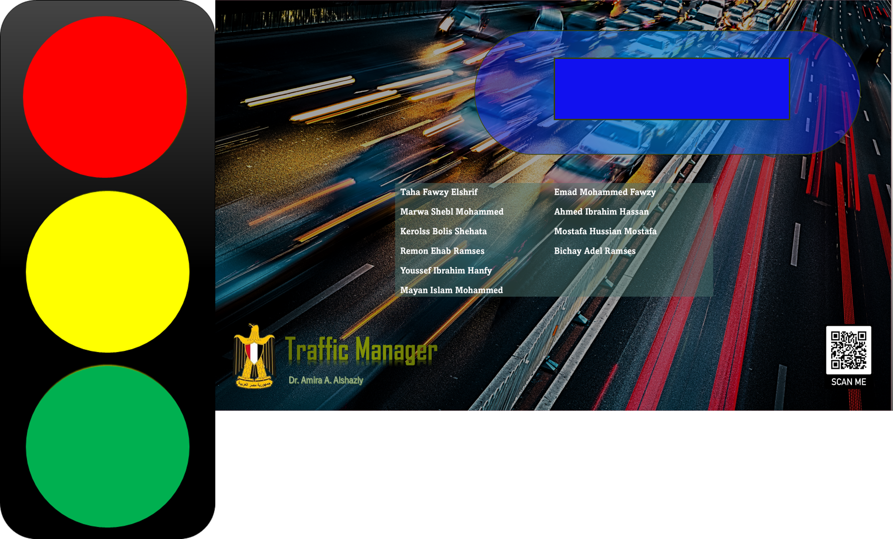

Reinforcement learning + IoT + computer vision
Traffic Manager
Problem: static traffic signals cannot adapt well to changing road conditions, especially when emergency vehicles need priority.
Solution: designed a smart signal prototype trained on simulated Egyptian road networks, then connected the best-performing model to a prototype with real-time computer vision for speed estimation, IoT-based signal control, and a mobile emergency-alert flow.
- Architecture: simulation and RL training, model evaluation, CV speed estimation, IoT controller, and mobile app integration.
- Engineering decisions: used experimental design and ANOVA to compare models instead of relying on one training run.
- Trade-offs: simulation enables controlled testing, while real roads would require more sensor reliability, safety validation, and deployment constraints.
- Lessons: AI projects need system-level thinking: data, evaluation, hardware integration, latency, and fallback behavior all matter.


{kind=link}
{kind=link}
{kind=link}
{kind=link}